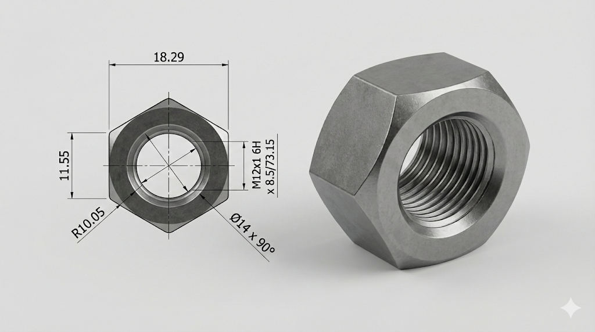

The Standard
Cosmetic threads in CAD are fine for visualization but useless for manufacturing verification — they carry no geometric data about thread form, pitch, or fit class. This project modeled the M12 nut with a real helical thread profile, verifying all dimensions against ISO metric screw thread tables and using the model to physically test FDM printer tolerance capabilities.
Implementation
Manual helix thread geometry
Thread profiles swept along a helix path rather than SolidWorks' cosmetic thread shortcut. This produces a solid model with the correct thread form geometry, allowing interference detection with mating fasteners and direct 3D printing.
ISO standard compliance
All dimensions verified against ISO metric screw thread tables: M12×1.75 pitch, 6H tolerance class, 19 mm width across flats. GD&T annotations applied to the fabrication drawing.
FDM calibration use
The model was 3D printed on an FDM printer to test whether the thread geometry could mate with a commercial M12 bolt. Printer clearance offsets were iterated to achieve a functional thread fit, documenting the tolerance correction needed for PLA at 0.2mm layer height.
Model Render
